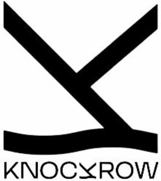

Trade Mark Journal No.2025/025 20 June 2025
WO0000001748782 (32,33)
Office of origin: Australia
Date of International Registration:19 July 2023
Date of designation in the UK:
5 May 2025

- Class 32
- Aerated drinks (non-alcoholic); alcohol free spirits; alcohol-free drinks; alcohol-free wine; ale; aperitifs, non-alcoholic; alcohol-free beer; alcoholic beers; barley wine (beer); beer; beer hampers; beer wort; black beer; dark beer; alcohol-free beverages; bitter beer; bitter lemon; bottled water (not for medical purposes); alcohol-free cider; cider, non-alcoholic; beer-based cocktails; home brew kit concentrate of hopped wort for making beer; homebrew kit concentrate of hopped wort for making beer; hop concentrates for use in the preparation of beverages; de-alcoholised beer; de-alcoholised drinks; de-alcoholised wines; essences for making beverages; extracts of hops for making beer; chocolate flavoured cola drinks; flavoured water beverages; ginger ale; ginger beer; ginger beer (alcoholic); ginger beer (non-alcoholic); home beer brewing ingredient kits (preparations for making beer) consisting primarily of extracts of hops and concentrates of malt; homebrewing ingredient kits (preparations for making beer) consisting primarily of extracts of hops and concentrates of malt; hop essences for use in the preparation of beverages; hop extracts for use in the preparation of beverages; hop pellets for use in brewing; kvass; lager; lemon barley water; lemon juice (beverage); lemon squash; lemonades; low alcohol beer; aerated beverages (non-alcoholic); grain based non-alcoholic beverages; non-alcoholic barley based beverages; non-alcoholic beverages; non-alcoholic beverages (except non-alcoholic beer); non-alcoholic beverages flavored with coffee; non-alcoholic beverages flavored with tea; non-alcoholic beverages flavoured with coffee; non-alcoholic beverages flavoured with tea; non-alcoholic essences for making beverages; sarsaparilla (non-alcoholic beverage); squashes (non-alcoholic beverages); preparations for making non-alcoholic beverages; carbonated non-alcoholic drinks; non-alcoholic carbonated drinks; cocktails, non-alcoholic; non-alcoholic cocktail bases; non-alcoholic cocktails; non-alcoholic honey-based beverages; non-alcoholic beverages being punches; non-alcoholic punches; non-alcoholic spirits; aerated fruit juices; fruit ale; bottled fruit drinks; bottled fruit juices; beverages made from fruit concentrates; concentrates for use in the preparation of fruit juice drinks; fruit concentrates for making beverages; fruit juice concentrates; aromatic extracts of fruits; fresh fruit juices; frozen concentrated fruit drinks; frozen concentrated fruit juices; frozen fruit juices; fruit based drinks; fruit beers; fruit beverages; fruit drinks; fruit juice beverages; fruit juice beverages that contain multi vitamins; fruit juice extracts (beverages or for making beverages); fruit juice extracts for use as a beverage; fruit juice nectar (beverages or for making beverages); fruit juices; lemonades containing fruit extracts; low calorie fruit juices; mixtures of fruit flavoured drinks; nectars of fruits; ades [non-alcoholic fruit-based drinks]; ades [non-alcoholic sweetened drinks of diluted fruit juices]; fruit flavoured non-alcoholic drinks; fruit nectars (non-alcoholic); non-alcoholic fruit extracts; non-alcoholic fruit juice beverages; non-fermented fruit drinks; non-fermented fruit juices; orange barley water; orange juice; part frozen slush drinks; pilsner beer; porter; root beer; seltzers (beverages); shandy; sherbets (beverages); concentrates for use in the preparation of soft drinks; liquid mixtures for making soft drinks; soft drinks; sorbets (beverages); stout; fruit syrups for making beverages; syrup for making beverages; syrups for beverages; tonic water (non-medicated beverages); tropical fruit squash (beverages); unfermented fruit juice; vegetable drinks; extracts of vegetables (beverages); vegetable extracts for use in the preparation of non-alcoholic drinks; vegetable extracts (beverages); fresh vegetable juices; frozen vegetable juices; beverages consisting of a blend of fruit and vegetable juices; vegetable juices (beverages); home brew kits namely concentrate of malt, hops and hopped wort for making beer; malt beer; malt-containing beverages (beers); malt-containing beverages (non-alcoholic, except beers).
- Class 33
- Alcohol for drinking; alcoholic beverages (except beer); alcoholic preparations for making beverages; carbonated beverages (alcoholic, except beers); fruit based alcoholic beverages; liquors (alcoholic beverages); pre-mixed alcoholic beverages, other than beer-based; sugarcane-based alcoholic beverages; alcoholic essences; alcoholic extracts; alcoholic extracts of fruits; fruit extracts (alcoholic); alcoholic punches; aperitifs; arak (arrack); arrack (arak); alcoholic beverages containing fruit; bitters; brandy; napoleon brandy; cider; cider coolers (beverages); low alcohol cider; cachaca; alcoholic cocktails; low alcohol cocktails; cocktails; curacao; baijiu (chinese distilled alcoholic beverage); distilled alcoholic beverages; grain-based distilled alcoholic beverages; distilled beverages; fermented liquors; gin; grappa; hard seltzer (alcoholic); kirsch; anise (liqueur); brandy based liqueurs; coconut liqueur; coffee based liqueurs; cooking liqueurs; cream liqueurs; liqueurs; mint flavoured liqueurs; orange liqueurs; peppermint liqueurs; anisette (liqueur); mead; mead (hydromel); mirin (alcoholic); perry; piquette; rice alcohol; rum; rum punch; sake; sangria; sparkling cider (alcoholic); spirit based cocktails (spirits predominating); fermented spirit; grain spirit produced from wheat; digestifs [liqueurs and spirits]; low alcohol spirits; spirits (beverages); still liqueurs; still spirits; vermouth; vodka; blended whisky; bourbon whisky; malt whisky; whisky; alcoholic beverages containing wine; beverages containing wine (wine predominating); blended wine; cooking wine; dessert wine; drinks containing wine (wine predominating); dry wine; dry fortified wine; fortified wines; ginger wine; low alcohol wine; mulled wines; dry red wine; red wine; dry sparkling wines; non-sparkling wines; sparkling fruit wines; sparkling wines; still wines; sweet fortified wine; sweet red wine; sweet sparkling wine; sweet wine; vintage wines; dry white wine; sweet white wine; white wine; wine; wine hampers; wine-based beverages.
Knockrow Distillers Pty Ltd